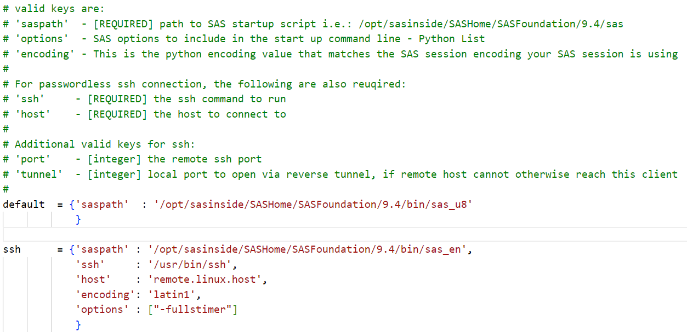

代码
%load_ext saspy.sas_magic%load_ext saspy.sas_magic安装 Anaconda 集成环境或 Python 和 SAS 软件，其中Anaconda要求Python3+；Python在Jupyter Notebook和SAS之间起一个桥梁的作用，Jupyter Notebook中的SAS代码会交给Python，Python负责将代码传递给SAS执行；然后将执行的结果返回给Jupyter Notebook显示。
SAS版本要求9.4，也可以是 SAS Viya。
启动 cmd，输入命令：
pip install sas_kernel然后就会自动安装 sas_kernel 及其相应的依赖项。
安装完成后可以输入命令：
jupyter kernelspec list来检测 sas_kernel 是否安装成功，如果成功，理论上会看到如下形式的输出：
Available kernels:
python3 /home/sas/anaconda3/lib/python3.5/site-packages/ipykernel/resources
sas /home/sas/.local/share/jupyter/kernels/sas安装好 sas_kernel 后找到 Anaconda 或 Python 的安装目录，会有一个相应的文件夹出现，例如我的文件路径如下：
C:\Users\asus\AppData\Local\Programs\Python\Python312\Lib\site-packages\saspy在这个文件路径下找到 sascfg.py 文件，该文件中需要配置连接SAS的信息。可以配置连接本地机器的SAS；也可以配置连接远程机器的SAS Server，无论是Linux Server还是Windows Server都可以。此处就以连接本地SAS为例进行说明。
SAS_config_names 用于指定连接SAS的配置方式，提供了 10 种方式：default, ssh, iomlinux, iomwin, winlocal, winiomlinux, winiomwin, httpsviya, httpviya, iomcom。默认为 default 方式。SAS_config_names 的值修改为 winlocal 。
后续有一些安装步骤，但是大多是在2016-2020年更新的教程，无法找到复现的路径，可能相关的配置已被优化。
包括这个 SAS岩论 | 在Jupyter Notebook中使用SAS 中写到的需要使用 cpW 定义 SAS 路径。
目前（2025年），我摸索出来的办法是：
修改 saspath 路径，指定 sas.exe 文件,路径形如：C:/Program Files/SASHome/SASFoundation/9.4/sas.exe

修改 encoding 为 euc-cn: 将winlocal连接方式中的参数 encoding 的值修改为 euc-cn 。因为这是SAS在Windows下的默认编码方式。如果编码方式不对，中文会出现乱码。或者 utf8，如果和 SAS 软件有冲突，可能会造成 SAS 软件乱码。
将sas相关文件 sspiauth.dll 添加到系统环境变量，该文件很可能在如下目录：
C:\Program Files\SASHome\SASFoundation\9.4\core\sasext（注意添加变量时不要包含 sspiauth.dll 文件本身）
Warning: 环境变量添加完成后，要重启电脑才会生效。
新建文件，选择使用 SAS 内核，或者在 cell 中通过 magic command 指定内核。
%%SASwarning: 在单元格中直接调用 SAS 之前，需要在文档中加载一次 magic 扩展 以定义 %%SAS
%load_ext saspy.sas_magic使用语法如下所示：
%%SAS
data prg1_1;
input x @@;
datalines;
60 142 195 80 242 220 190 25 212 38 236 95
;
run;
proc means data=prg1_1;
var x;
quit;Using SAS Config named: winlocal
SAS Connection established. Subprocess id is 8788
MEANS PROCEDURE
| 分析变量: x | ||||
|---|---|---|---|---|
| 数目 | 均值 | 标准差 | 最小值 | 最大值 |
| 12 | 144.5833333 | 80.9797487 | 25.0000000 | 242.0000000 |
在Notebook中写SAS代码了，跟Python一样，同样有代码提示、语法高亮的功能。但是你会注意到过程步的结果显示了，运行的日志去哪里了？
如果代码运行错误或者没有输出（例如纯DATA步）的话，那么输出就是日志信息。
能够正确运行且有输出结果的代码就不会显示日志了。
如果想要像SAS Base一样，随时查看所有程序运行的日志结果也没问题。安装一个 Notebook 的 SAS 日志扩展组件就可以了。打开 Anaconda Prompt，输入以下命令安装：
jupyter nbextension install --py sas_kernel.showSASLog运行完毕后，输入以下命令启用 SAS 日志组件：
jupyter nbextension enable sas_kernel.showSASLog –py如果需要配置连接远程的SAS Server，如连接远程Windows机器的SAS Server，需在sascfg.py中做以下修改：
将SAS_config_names的值改为“wintowin”；
在wintowin连接方式中将参数iomhost的值修改为远程Windows机器的IP地址；将参数encoding的值修改为euc-cn；
将cpW中5个Jar包的路径修改为远程Windows机器中SAS对应的目录。
修改完毕后，启动Notebook，首次运行SAS代码时，会提示输入访问SAS Server的有效SAS用户和密码。1
SASPy 是一个 Python 库，允许你通过 Python 代码与 SAS 进行交互。SAS Kernel 依赖于 SASPy，因此在使用 SAS Kernel 之前，你需要配置 SASPy。
SAS Kernel 支持 JupyterLab 扩展，这些扩展可以提高你在 JupyterLab 中的编程效率。你可以通过以下命令安装这些扩展：
pip install sas_kernel[jlab_ext] NBGrader 是一个用于分配和评分 Jupyter Notebook 的系统，它与 SAS Kernel 兼容。你可以使用 NBGrader 来创建和评分包含 SAS 代码的作业。
通过这些生态项目，SAS Kernel 不仅扩展了 Jupyter Notebook 的功能，还增强了其在数据科学和分析领域的应用能力。2